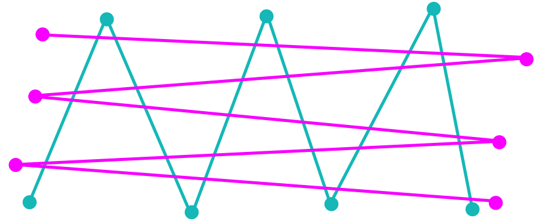
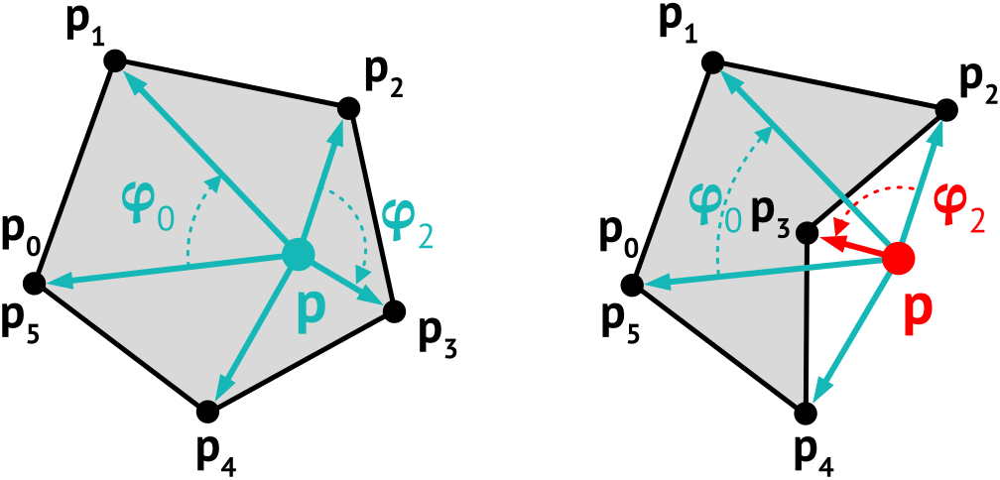
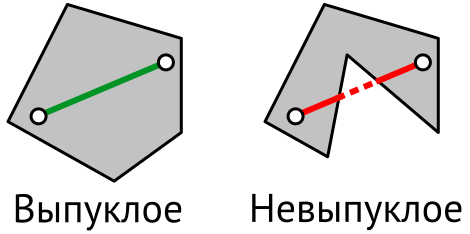

Геометрические операции — I
Геоинформатика I. Базы пространственных данных
Самсонов Тимофей Евгеньевич
17 марта 2024 г.
Основные операции
- Расстояния между объектами
- Периметр линии
- Площадь полигона
- Точка относительно прямой
- Точка относительно отрезка
- Пересечение отрезков
- Точка в полигоне
- Ограничивающий прямоугольник
- Выпуклая оболочка
- Минимальный прямоугольник
- Оверлей полигонов
- Слияние линий и полигонов
- Полигонизация линий
- Буферная зона
- Триангуляция Делоне
- Диаграмма Вороного
- Скелет и срединная ось полигона
- Центроид полигона
- Точка на поверхности
- Вогнутая оболочка
Вектор и прямая
Пусть заданы две точки \(p_1 = (x_1, y_1)\) и \(p_2 = (x_2, y_2)\).
Вектор между \(p_1\) и \(p_2\) определяется как
\[
\overrightarrow{p_1p_2} = (x_2 - x_1,~y_2 - y_1)
\]
Прямая через \(p_1\) и \(p_2\) задается уравнением
\[
\frac{y-y_1}{y_2-y_1} = \frac{x-x_1}{x_2-x_1},
\]
и в каноническом виде
\[
ax + by + c = 0
\]
где \(a = y_1-y_2\), \(b = x_2 -x_1\), \(c = x_1y_2 - x_2y_1\)
Расстояние от точки до прямой
Евклидово расстояние от точки \(p_1\) до точки \(p_2\) вычисляется как:
\[
d(p_1,p_2) = \sqrt{(x_1 - x_2)^2 + (y_1 - y_2)^2}
\]
Расстояние от точки \(p = (x_p, y_p)\) до прямой \(l\) вычисляется как:
\[
d(p, l) = \frac{|ax_p + by_p + c|}{\sqrt{a^2 + b^2}}
\]
где \(a\), \(b\) и \(c\) — коэффициенты уравнения прямой \(l\).
Расстояние от точки до отрезка
В зависимости от конфигурации это может быть как расстояние до прямой, так и расстояние до одной из крайних точек отрезка.
Пусть дана точка \(p\) и отрезок \(\overline{qr}\), лежащий на прямой \(l\). Введем три вектора:
\[
\mathbf u = \overrightarrow{qp},~\mathbf v = \overrightarrow{pr},~\mathbf w = \overrightarrow{qr}
\]
Тогда расстояние определится как:
\[
\mathrm d(p, \overline{qr}) = \begin{cases}
\mathrm d(p, q),~если~(\mathbf u, \mathbf w) < 0; \\
\mathrm d(p, r),~если~(\mathbf v, \mathbf w) < 0; \\
\mathrm d(p, l)~\textrm{в противном случае}
\end{cases}
\]
где \((\mathbf a, \mathbf b) = x_a x_b + y_a y_b\) — скалярное произведение векторов
Расстояние от точки до линии
Расстояние от точки до линии \(L\) , состоящей из \(k\) вершин — это минимальное из расстояний от точки до каждого из отрезков линии:
\[
d(p, L) = \min \big[\textrm d(p, \overline{p_j p_{j+1}})\big], ~j=0...k-2
\]
Если длины сегментов линии существенно меньше, чем расстояние до точки, то в качестве приближения можно взять расстояние до ближайшей точки линии.
Расстояние от точки до полигона
Расстояние от точки до полигона \(A\), состоящего из \(n\) колец, равняется \(0\), если точка внутри полигона, иначе равна минимальному расстоянию до границы полигона.
\[
d(p, A) = \min\big[\textrm d(p, \overline{p_{i,j} p_{i,j+1}})\big],~i = 0...n-1,~j = 0...k_i-2
\]
Для определения принадлежности точки полигону необходимо использовать соответствующий тест
Расстояния между множествами точек
Однозначность определения расстояния теряется, когда его необходимо определить между двумя множествами точек.
Расстояния между множествами точек
В частности, такими множествами могут быть линии. Должно ли это быть расстояние между ближайшими, дальними или конечными точками линий?
Расстояние Хаусдорфа (simplified)
Для каждой точки из \(\mathcal A\) вычислим расстояние до ближайшей точки из \(\mathcal B\) и выберем из них максимальное.
Расстояние Хаусдорфа (simplified)
Для каждой точки из \(\mathcal B\) вычислим расстояние до ближайшей точки из \(\mathcal A\) и выберем из них максимальное.
Расстояние Хаусдорфа (simplified)
Cравним полученные расстояния и выберем из них максимальное.

Расстояние Хаусдорфа (simplified)
Полученное расстояние будем называть расстоянием Хаусдорфа (или Хаусдорфовым расстоянием).
Расстояние Хаусдорфа
Если даны два подмножества \(\mathcal{A} = \lbrace a \rbrace\) и \(\mathcal{B} = \lbrace b \rbrace\) метрического пространства \(M\) с заданным расстоянием \(\mathrm d\), то расстояние Хаусдорфа \(\textrm d_H(\mathcal{A}, \mathcal{B})\) вычисляется как:
\[
\mathrm d_{\mathrm H}(\mathcal{A},\mathcal{B}) = \max\left\{\,\sup_{a \in \mathcal{A}} \inf_{b \in \mathcal{B}} \mathrm d(a,b),\, \sup_{b \in \mathcal{B}} \inf_{a \in \mathcal{A}} \mathrm d(a,b)\,\right\}
\]
На практике, когда \(\mathcal{A}\) и \(\mathcal{B}\) являются конечными точечными множествами, вычисляется дискретная версия \(\widehat{\mathrm d_H}\) на основе двух расстояний:
\(\vec{\mathrm d}_H(\mathcal{A},\mathcal{B}) = \underset{a}{\max}~\mathrm d(a, \mathcal{B})\), где \(d(a, \mathcal{B}) = \min_{b \in \mathcal{B}}\lVert a - b \rVert\) как приближение \(\sup_{a \in \mathcal{A}} \inf_{b \in \mathcal{B}} d(a,b)\).
\(\vec{\mathrm d}_H(\mathcal{B},\mathcal{A}) = \underset{b}{\max}~\mathrm d(b, \mathcal A)\), где \(d(b, \mathcal{A}) = \min_{a \in \mathcal{A}}\lVert b - a \rVert\) как приближение \(\sup_{b \in \mathcal{B}} \inf_{a \in \mathcal{A}} d(a,b)\).
Дискретное расстояние Хаусдорфа
Дискретное расстояние Хаусдорфа определяется как:
\[
\widehat {\mathrm d_H}(\mathcal{A},\mathcal{B}) = \max \left\{\vec{\mathrm d}_H(\mathcal{A},\mathcal{B}),\, \vec{\mathrm d}_H(\mathcal{B},\mathcal{A}) \right\}
\]
Величина \(\vec{\mathrm d}_H\) называется направленным расстоянием Хаусдорфа.
Чувствительность к выбросам
И \(\mathrm d_H\), и \(\widehat{\mathrm d_H}\) являются мимимаксными мерами, они чувствительны к выбросам из множества.
Модифицированное расстояние Хаусдорфа заменяет максимум кратчайших расстояний их средним значением, что устраняет чувствительность к выбросам:
\[
\mathrm d_M = \max \left\{\frac{1}{|\mathcal{A}|}\underset{a}{\sum} \mathrm d(a, \mathcal B),\, \frac{1}{|\mathcal{B}|}\underset{b}{\sum} \mathrm d(b, \mathcal A) \right\}
\]
Модифицированное расстояние Хаусдорфа
Модифицированное расстояние Хаусдорфа может использоваться в качестве приближенной метрики расстояния между линиями. Однако оно не учитывает непрерывность и направление линии.
Модифицированное расстояние Хаусдорфа
Данная метрика работает только в простых случаях, когда линии идут параллельными путями. На рисунке ниже расстояние Хаусдорфа и его модификации не эффективны.

Расстояние Фреше
Минимальная длина поводка, который нужен хозяину, чтобы выгулять собаку при том, что оба они идут разными дорожками от начала до конца.
Расстояние Фреше
Расстояние Фреше является мерой близости линий с учетом их непрерывности и направления:
\[
\mathrm d_F(\mathcal{A},\mathcal{B}) = \inf_{\alpha, \beta}\,\,\max_{t \in [0,1]} \,\, \Bigg \{\mathrm d \Big (\mathcal{A}\big(\alpha(t)\big), \, \mathcal{B}\big(\beta(t)\big) \Big ) \Bigg \},
\]
где \(\mathcal{A}(u),~\mathcal{B}(v),~u,v \in [0, 1]\) — параметрические описания линий
\(\alpha(t),~\beta(t),~t \in [0, 1]\) — репараметризации, которые оптимизируются для нахождения таких \(u = \alpha(t)\) и \(v = \beta(t)\), которые минимизируют максимальное расстояние между \(\mathcal{A}(u)\) и \(\mathcal{B}(v)\) для общего \(t\).
Расстояние Фреше — это минимальная длина поводка, который нужен хозяину, чтобы выгулять собаку при том, что оба они идут разными дорожками от начала до конца.
Длина / периметр
Рассчитываются как сумма длин отрезков, составляющих контур объекта:
\[
\sum_{i=0}^{n-2}\sqrt{(x_{i+1}-x_i)^2 + (y_{i+1}-y_i)^2}
\]
У полигона последняя точка должна иметь такие же координаты, как и первая.
Площадь
Рассчитывается как сумма площадей трапеций, ограниченных сверху отрезками, составляющими контур объекта:
\[
\frac{1}{2}\sum_{i=0}^{n-2} \underbrace{(y_{i+1}+y_{i})}_{\texttt{основания}}\underbrace{(x_{i+1}-x_{i})}_{\texttt{высота}}
\]
Трапеции, у которых \(i+1\)-я точка имеет меньший X, чем \(i\)-я, имеют отрицательную площадь.
Точка относительно прямой
Пусть прямая \(l\) определяется отрезком \(\overline{qr}\). Расположение точки \(p\) относительно этой прямой зависит от знака площади треугольника \(\triangle qpr\):
\[
\texttt{area}(\triangle qpr) = \frac{1}{2}\big[x_q y_p - x_p y_q + x_p y_r - x_r y_p + x_r y_q - x_q y_r \big]
\]
\[
\texttt{side}(q,p,r) = \begin{cases}
1,\textrm{ если } \texttt{area}(\triangle qpr) > 0~(p \textrm{ слева от } l),\\
0,\textrm{ если } \texttt{area}(\triangle qpr) = 0~(p \textrm{ на } l),\\
-1,\textrm{ если } \texttt{area}(\triangle qpr) < 0~(p \textrm{ справа от } l),\\
\end{cases}
\]
Точка на отрезке
Точка \(p\) располагается на отрезке \(\overline{qr}\), если одновременно выполняются \(3\) условия:
\[
\texttt{point_on_segment}(p,\overline{qr}) = \big(\texttt{side}(q,p,r) = 0\big) \\
\land \big(\min(x_q, x_r) \leq x_p \leq \max(x_q, x_r)\big) \\
\land \big(\min(y_q, y_r) \leq y_p \leq \max(y_q, y_r)\big)
\]
Для того чтобы избежать ошибок, связанных с ограниченной точностью вычислений, часто выполняют не проверку равенства нулю, а сравнение с очень малым числом: \(|\texttt{side}(q,p,r)| < \epsilon\), где \(\epsilon\) задается как константа в программе. Например, EPS = 1e-9.
Пересечение отрезков
Отрезки пересекаются, если их точки попарно располагаются по разные стороны от соответствующих прямых.
В этом случае одновременно выполняются два условия:
\[
\texttt{side}(p_1, p_2, p_3) \neq \texttt{side}(p_1, p_2, p_4)\\
\texttt{side}(p_3, p_4, p_1) \neq \texttt{side}(p_3, p_4, p_2)
\]
Если отрезки коллинеарны, то надо проверять условия вида:
\[
\texttt{point_on_segment}(p_3, \overline{p_1 p_2}),~\texttt{point_on_segment}(p_4, \overline{p_1 p_2})
\]
Точка пересечения
Представим отрезки в параметрическом виде:
\[
\overline{p_1 p_2} = \{\lambda p_1 + (1 - \lambda) p_2 | \lambda \in [0,1]\}\\
\overline{p_3 p_4} = \{\mu p_3 + (1 - \mu) p_4 | \mu \in [0,1]\}
\]Если отрезки пересекаются, то справедливо равенство:
\[
\lambda p_1 + (1 - \lambda) p_2 = \mu p_3 + (1 - \mu) p_4\\
\lambda(p_1 - p_2) - \mu(p_3 - p_4) = p_4 - p_2
\]
Переходя от точек к координатам получаем систему уравнений:
\[
\begin{cases}
\lambda(x_1 - x_2) - \mu(x_3 - x_4) = x_4 - x_2\\
\lambda(y_1 - y_2) - \mu(y_3 - y_4) = y_4 - y_2
\end{cases}
\]
Решив систему относительно \(\lambda\) и \(\mu\), получаем точку пересечения.
Выпуклость полигона
Полигон является выпуклым, если каждая последующая его точка одинаково располагается относительно прямой, проходящей через две предыдущих.
\[
\texttt{side}(p_0, p_1, p_2) = \texttt{side}(p_1, p_2, p_3) = ... = \texttt{side}(p_{n-3}, p_{n-2}, p_{n-1})
\]
Точка в выпуклом полигоне
Если полигон является выпуклым, то все его внутренние точки располагаются по одну сторону относительно границы.
\[
\texttt{side}(p, p_1, p_2) = \texttt{side}(p, p_2, p_3) = ... = \texttt{side}(p, p_{n-2}, p_{n-1})
\]
Точка в полигоне (луч)
Луч, выпущенный из точки в направлении оси \(X\), сечёт (crosses) границу полигона нечетное количество раз.
Обратите внимание
Если луч пересекает одну из вершин полигона, и оба примыкающих к ней отрезка находятся по одну сторону от луча, то это не сечение, а касание границы, которое не должно влиять на результат.
Если полигон состоит из вершин \(p_i = (x_i, y_i)\), то в качестве луча можно взять отрезок \(\overline{pq}\), где \(q = (max(x_i), y_p)\).
Угол между векторами
Угол \(0 \leq \theta \leq \pi\) между векторами определяется через скалярное произведение:
\[
(\mathbf u, \mathbf v) = |\mathbf u||\mathbf v| \cos \theta \Rightarrow \theta = \arccos \frac{(\mathbf u, \mathbf v)}{|\mathbf u||\mathbf v|} \\
\theta = \arccos \frac{u_x v_x + u_y v_y}{\sqrt{u_x^2 + u_y^2}\sqrt{v_x^2 + v_y^2}}
\]
Порядок точки
Порядок точки относительно замкнутой кривой — число полных оборотов, которое кривая делает вокруг заданной точки против часовой стрелки.
Точка в полигоне (угол)
Точка находится внутри, если число оборотов не равно 0:
\[
\newcommand\sgn{{\mathrm{sgn}}}
\sum_{i=0}^{n-2} \varphi_i \neq 0,~где~\varphi_i = \sgn \begin{vmatrix} v^x_i & v^y_i \\ v^x_{i+1} & v^y_{i+1} \end{vmatrix} \arccos \frac{(\mathbf v_i, \mathbf v_{i+1})}{|\mathbf v_i||\mathbf v_{i+1}|}, \\
где~\mathbf v_i = \overrightarrow{pp_i} = (v^x_i, v^y_i) = (x_i - x_p,~y_i - y_p)
\]

Ограничивающий прямоугольник
Ограничивающий прямоугольник определяет охват данных по осям координат.
Задаётся координатами углов:
левого нижнего \((x_{min}, y_{min})\)
правого верхнего \((x_{max}, y_{max})\)
Ограничивающий прямоугольник является важным элементом метаданных — описания пространственных данных, но также используется и в аналитических задачах.
Выпуклая оболочка
Выпуклая оболочка — наименьший по площади выпуклый многоугольник, покрывающий заданное множество точек.
Множество, в котором отрезок, соединяющий любые две точки также находится внутри этого множества.


Выпуклые оболочки используются для восстановления ареалов по точечным измерениям. Также выпуклая оболочка является границей триангуляционного покрытия.
Выпуклая оболочка
Известный метод построения — алгоритм Джарвиса (Jarvis 1973):
- Найти точку \(q_0\) с минимальной координатой \(X\).
Выпуклая оболочка
Известный метод построения — алгоритм Джарвиса (Jarvis 1973):
Найти точку \(q_0\) с минимальной координатой \(X\).
Найти точку \(q_1\) с минимальным дирекционным углом относительно \(q_0\).
Выпуклая оболочка
Известный метод построения — алгоритм Джарвиса (Jarvis 1973):
Найти точку \(q_0\) с минимальной координатой \(X\).
Найти точку \(q_1\) с минимальным дирекционным углом относительно \(q_0\).
Пока \(q_k \neq q_0\) начиная с \(k=1\)
\(k = 2,~q_2 \neq q_0\)
Выпуклая оболочка
Известный метод построения — алгоритм Джарвиса (Jarvis 1973):
Найти точку \(q_0\) с минимальной координатой \(X\).
Найти точку \(q_1\) с минимальным дирекционным углом относительно \(q_0\).
Пока \(q_k \neq q_0\) начиная с \(k=1\)
\(k=3,~q_3 \neq q_0\)
Выпуклая оболочка
Известный метод построения — алгоритм Джарвиса (Jarvis 1973):
Найти точку \(q_0\) с минимальной координатой \(X\).
Найти точку \(q_1\) с минимальным дирекционным углом относительно \(q_0\).
Пока \(q_k \neq q_0\) начиная с \(k=1\)
\(k=4,~q_4 \neq q_0\)
Выпуклая оболочка
Известный метод построения — алгоритм Джарвиса (Jarvis 1973):
Найти точку \(q_0\) с минимальной координатой \(X\).
Найти точку \(q_1\) с минимальным дирекционным углом относительно \(q_0\).
Пока \(q_k \neq q_0\) начиная с \(k=1\)
\(k=5,~q_5 \neq q_0\)
Выпуклая оболочка
Известный метод построения — алгоритм Джарвиса (Jarvis 1973):
Найти точку \(q_0\) с минимальной координатой \(X\).
Найти точку \(q_1\) с минимальным дирекционным углом относительно \(q_0\).
Пока \(q_k \neq q_0\) начиная с \(k=1\)
\(k=6,~q_6 = q_0\)
Выпуклая оболочка
Известный метод построения — алгоритм Джарвиса (Jarvis 1973):
Найти точку \(q_0\) с минимальной координатой \(X\).
Найти точку \(q_1\) с минимальным дирекционным углом относительно \(q_0\).
Пока \(q_k \neq q_0\) начиная с \(k=1\)
Восстановить полигон по точкам \(q_0, q_1, … q_k\), где \(k > 2\) и \(q_0 = q_k\).
Выпуклая оболочка
Алгоритм Джарвиса без вычисления углов: минимальный угол поворота означает, что остальные точки располагаются по правую сторону относительно \(\overrightarrow{qr}\).
Пусть \(P = \{p_i\}\) — множество \(n\) точек и \(Q = \{q_j\}\) — искомая выпуклая оболочка.
\(Q = \varnothing;~q =\min_x p\)
В цикле (while True):
\(Q = Q \cup q;~r = p_0\)
В цикле по \(i\) от \(0\) до \(n-1\):
\(q = r\)
Если \(q = q_0\), то \(Q = Q \cup q\) и прервать цикл
Аффинные преобразования
Аффинное преобразование \(f\colon\mathbb{R}^{n}\to \mathbb{R}^{n}\) есть преобразование вида:
\[
f(\mathrm p) = \mathbf M \cdot \mathrm p + \mathrm v
\]
где \(\mathbf M\) — обратимая матрица (квадратная матрица, определитель которой отличен от нуля) и \(v\in \mathbb{R}^{n}\).
\(\mathbf M\) и \(\mathrm v\) обычно объединяются в одну матрицу \(\mathbf A\), что требует представления \(p\) в однородных координатах: \(\widehat{\mathrm p} = (x_p, y_p,..., 1)\). В этом случае аффинное преобразование можно записать как:
\[
f(\mathrm p) = \mathbf A \cdot \widehat{\mathrm p} = \left[ \begin{array}{ccc|c} \, & \mathbf M & & \mathrm v \ \\ 0 & \ldots & 0 & 1 \end{array} \right] \begin{bmatrix} \mathrm p \\ 1 \end{bmatrix}
\]
Аффинные преобразования
Сдвиг на вектор трансляции \(t = (t_x, t_y)\):
\[
\begin{bmatrix} x' \\ y' \\ 1 \end{bmatrix} = \underbrace{\begin{bmatrix} 1 & 0 & t_x \\ 0 & 1 & t_y \\ 0 & 0 & 1 \end{bmatrix}}_{\mathbf T(t_x, t_y)} \begin{bmatrix} x \\ y \\ 1 \end{bmatrix} = \begin{bmatrix} 1x + 0y + t_x1 \\ 0x + 1y + t_y1 \\ 0x + 0y + 1 \end{bmatrix} = \begin{bmatrix} x + t_x \\ y + t_y \\ 1 \end{bmatrix},
\]
Масштабирование с коэффициентами \(s_x, s_y\):
\[
\begin{bmatrix} x' \\ y' \\ 1 \end{bmatrix} = \underbrace{\begin{bmatrix} s_x & 0 & 0 \\ 0 & s_y & 0 \\ 0 & 0 & 1 \end{bmatrix}}_{\mathbf S(s_x, s_y)} \begin{bmatrix} x \\ y \\ 1 \end{bmatrix} = \begin{bmatrix} x s_x \\ y s_y \\ 1 \end{bmatrix},
\]
Аффинные преобразования
Поворот на угол \(\theta\):
\[
\begin{bmatrix} x' \\ y' \\ 0 \end{bmatrix} = \underbrace{\begin{bmatrix} \cos \theta & -\sin \theta & 0 \\ \sin \theta & \cos \theta & 0 \\ 0 & 0 & 1 \end{bmatrix}}_{\mathbf R(\theta)} \begin{bmatrix} x \\ y \\ 1 \end{bmatrix} = \begin{bmatrix} x \cos \theta - y \sin \theta \\ x \sin \theta + y \cos \theta \\ 1 \end{bmatrix},
\]
Комбинации преобразований. Например, чтобы повернуть относительно точки \(r = (x_r, y_r)\) на угол \(\theta\), необходимо преобразование следующего вида:
\[
\textrm p' = \mathbf T(x_r, y_r) \mathbf R(\theta) \mathbf T(-x_r, -y_r) \mathrm p
\]
Если точка \(\mathrm p\) записана в столбик, то преобразования выполняются (и читаются) справа налево.
Направление вектора
Для определения направления вектора \(\mathbf u = (x, y)\) в диапазоне от \(-\pi\) до \(\pi\) используется функция \(\mathrm{atan2}\):
\[
\operatorname{atan2}(y, x) =\begin{cases} \arctan\left(\frac y x\right) &\text{если } x > 0, \\[5mu] \arctan\left(\frac y x\right) + \pi &\text{если } x < 0 \text{ и } y \ge 0, \\[5mu] \arctan\left(\frac y x\right) - \pi &\text{если } x < 0 \text{ и } y < 0, \\[5mu] +\frac{\pi}{2} &\text{если } x = 0 \text{ и } y > 0, \\[5mu] -\frac{\pi}{2} &\text{если } x = 0 \text{ и } y < 0, \\[5mu] \text{undefined} &\text{если } x = 0 \text{ и } y = 0.\end{cases}
\]
Мин. по площади огр. прямоугольник
Является наименьшим по площади среди всех прямоугольников, охватывающих данное множество точек
Согласно теореме Фримена-Шапира (Freeman и Shapira 1975) одна из сторон такого прямоугольника должна касаться его выпуклой оболочки.
Результат теоремы Фримена-Шапира позволяет проверить всего лишь \(n\) прямоугольников, где \(n\) — число сторон в выпуклой оболочке.
Мин. по площади огр. прямоугольник
Пусть выпуклая оболочка состоит из \(n\) вершин \(q_i = (x_i, y_i),~i = 0...n-1\). Введем переменные \(k=0\) и \(S_{\min} = +\infty\). Тогда в цикле для каждого \(j\) от \(0\) до \(n-2\):
Вычислить направление \(\gamma_j = \texttt{atan2}(y_{j+1} - y_j,~x_{j+1} - x_j)\) для вектора \(\overrightarrow{q_j q_{j+1}}\).
Повернуть координаты всех точек оболочки на угол \(-\gamma_j\): \(\mathrm q_{ij} = \mathbf R(-\gamma_j)\mathrm q_i = (x_{ij}, y_{ij}),~i = 0...n-1\)
Вычислить площадь ограничивающего прямоугольника повернутых координат: \(S_j = \big[\max(x_{ij})-\min(x_{ij})\big] \times \big[\max(y_{ij}) - \min(y_{ij})\big]\).
Если \(S_j < S_{\min}\), то \(S_{\min} = S_j, ~ k = j\).
Полученное значение \(k\) указывает на сторону выпуклой оболочки, которой коллинеарна одна из сторон искомого прямоугольника (Toussaint 1983).
Мин. по площади огр. прямоугольник
После окончания цикла можно получить координаты углов искомого прямоугольника путем поворота углов в обратном направлении:
\[
r_0 = \mathbf R(\gamma_k) \begin{bmatrix} \min(x_{ik}) \\ \min(y_{ik}) \\ 1 \end{bmatrix},~r_1 = \mathbf R(\gamma_k) \begin{bmatrix} \min(x_{ik}) \\ \max(y_{ik}) \\ 1 \end{bmatrix}
\]
\[
r_2 = \mathbf R(\gamma_k) \begin{bmatrix} \max(x_{ik}) \\ \max(y_{ik}) \\ 1 \end{bmatrix},~r_3 = \mathbf R(\gamma_k) \begin{bmatrix} \max(x_{ik}) \\ \min(y_{ik}) \\ 1 \end{bmatrix}
\]
Минимальный по площади ограничивающий прямоугольник нельзя описать координатами двух углов — требуется указание как минимум трёх.